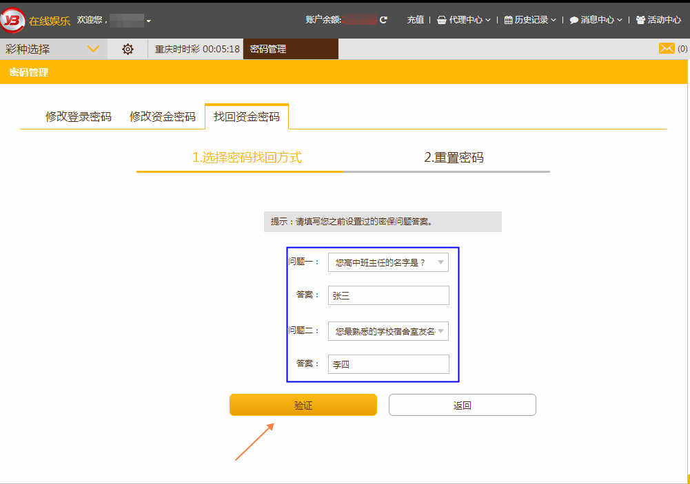
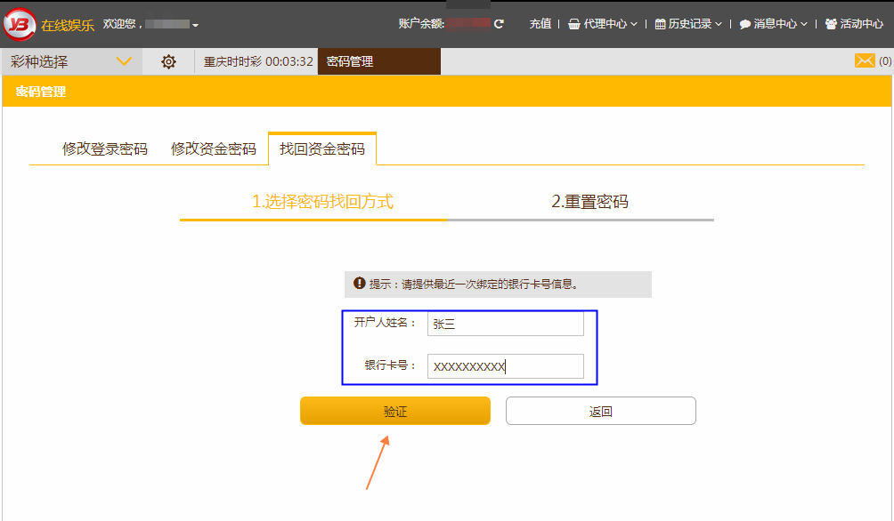
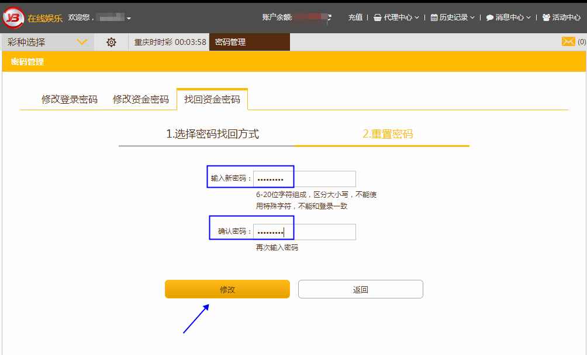

把鼠标移到自己的账名户下面，会自动出现一个下拉框，选择“密码管理”

点击进去以后选“找回资金密码”。您的账户如已设置密保问题，您可以通过“密保问题”找回资金密码；还可以通过银行卡信息找回资金密码。假如您忘记了所有信息，您还可以通过在线客服进行人工申诉找回资金密码。

如您选择通过密保问题找回资金密码，则跳转至密保问题页，您填写好之前设置过的密保问题答案，然后点击“验证”即可；如您选择通过银行卡信息找回资金密码，则跳转至银行卡信息页，您填写好开户人姓名和银行卡号，然后点击“验证”即可。


如果您填写的密保问题答案正确，或者填写的银行卡信息正确，则页面自动跳转至“重置资金密码”页，您只需要输入新的密码，然后点击“修改”，则新的资金密码设置成功。您一定要牢记新的资金密码哦~
